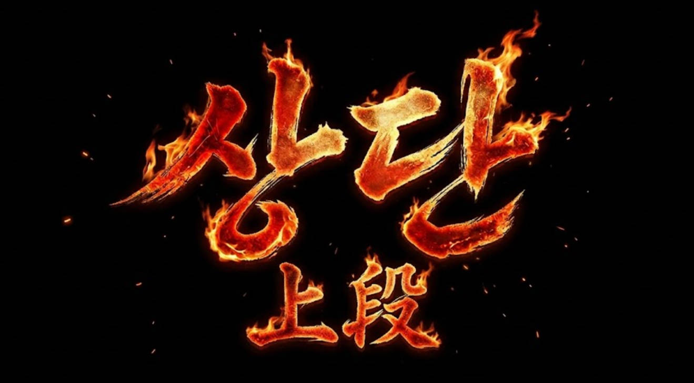

🌐 English version available — use the KO/EN button in the top right corner.

'불의 자세'라고도 불리는 상단을 구사하는 검도인은 도장에서 찾아보기 힘들고, 큰 대회에서도 두각을 나타내는 선수가 극히 드물다. 심지어 검리와 낯섦을 이유로 터부시하는 분위기가 일부 존재하는 것도 사실이다. 그러나 불과 반세기 전, 전일본검도선수권대회의 결승전은 상단 대 상단의 대결로 채워졌다. 이 글에서는 상단으로 전일본검도선수권대회를 제패한 역대 검사들부터 최근 두각을 나타내고 있는 상단 선수들까지 살펴보고자 한다.
상단이란
죽도를 머리 위로 높이 든 공격적 자세다. 방어를 포기하는 대신 상대에게 극도의 심리적 압박을 가한다. 상대는 언제 내려칠지 모르는 죽도 아래에서 스스로 움츠러들게 된다. 검도에서는 고등학생 이상만 시합에서 사용할 수 있다. 중학생 이하는 금지인데, 상단에 대한 가장 유효한 대응 기술인 찌름이 안전상의 이유로 중학생 이하에게 허용되지 않기 때문이다.
전성기 — 토다에서 치바, 카와조에까지
전일본검도선수권대회에서 상단이 처음 정상에 오른 것은 제5회(1957년)의 모리타 노부타카(森田信尊, 나가사키, 39세)였다. 제9회(1961년)에는 이호 세이지(伊保清次, 도쿄, 41세, 교원)가 우승하며 뒤를 이었다.
본격적인 상단 시대의 문을 연 것은 토다 타다오(戸田忠男)였다. 시가현 출신의 동양레이온(東洋レーヨン) 사원으로, 제10회(1962년) 대회에서 23세로 우승했다. 결승에서 상대인 카타야마가 중단에서 상단으로 자세를 바꾸는 순간, 토다는 선명한 손목을 결정지었고 이어 머리까지 빼앗아 왕좌에 올랐다. 제12회(1964년)에도 재차 우승하며 2회 우승을 달성했다. 훗날 토다는 이도(二刀)의 제1인자로도 이름을 날린다.
토다의 뒤를 이어 상단 열풍을 완성시킨 인물이 치바 마사시(千葉仁, 1944~2016, 경시청)다. 왼손잡이였던 그는 고등학교 3학년 때 선생 몰래 상단을 연습하다 발각됐으나, 마침 상단의 후계자를 찾고 있던 스승 니유이 요시히로(乳井義博)는 치바의 왼손잡이 기질을 오히려 높이 평가해 정식으로 허락했다. 이 우연한 발견이 검도 역사의 한 페이지를 바꾸게 된다. 치바의 득의기는 상단에서 한 손으로 내리치는 편수 손목(片手小手)이었다.
치바는 제14회(1966년, 22세), 제17회(1969년, 25세), 제20회(1972년, 28세)에 우승하며 당시 역대 최다인 3회 우승 기록을 세웠다. 이 기록은 이후 미야자키 마사히로가 6회 우승으로 경신하기 전까지 역대 공동 최다로 남았다. 특히 제20회 결승 상대는 카와조에 테쓰오(川添哲夫)였다. 두 사람 모두 상단. 전일본검도선수권 역사상 유일하게 기록된 상단 대 상단의 결승전이었으며, 치바가 승리해 3회 우승의 대업을 이뤘다.
카와조에는 국사관대학 4학년 재학 중인 21세에 제19회(1971년)를 제패했다. 대학생 신분으로 전일본을 제패한 것은 당시로서는 이례적인 일로 학생 검도계에도 상단 열풍을 불러일으키는 계기가 됐다. 카와조에는 제23회(1975년)에도 우승해 2회 우승을 달성했다.
1962년부터 1975년까지 13년 사이 상단 선수가 전일본을 7회 제패했다. 결승전이 상단끼리의 대결로 성사되기도 했고, 전국 도장에서 상단을 배우겠다는 수련생이 늘어났다. 검도계 역사상 가장 뜨거웠던 상단의 계절이었다.
| 회 | 연도 | 우승자 | 비고 |
|---|---|---|---|
| 제5회 | 1957 | 모리타 노부타카(森田信尊) | 나가사키, 39세 |
| 제9회 | 1961 | 이호 세이지(伊保清次) | 도쿄, 41세, 교원 |
| 제10회 | 1962 | 토다 타다오(戸田忠男) | 시가, 23세, 동양레이온 |
| 제12회 | 1964 | 토다 타다오(戸田忠男) | 2회 우승 |
| 제14회 | 1966 | 치바 마사시(千葉仁) | 도쿄, 22세, 경시청 |
| 제17회 | 1969 | 치바 마사시(千葉仁) | 2회 우승 |
| 제19회 | 1971 | 카와조에 테쓰오(川添哲夫) | 도쿄, 21세, 국사관대 재학 중 |
| 제20회 | 1972 | 치바 마사시(千葉仁) | 3회 우승 / 결승 상대도 상단 |
| 제23회 | 1975 | 카와조에 테쓰오(川添哲夫) | 2회 우승 |
무네 찌름의 도입과 상단의 몰락
1979년(쇼와 54년), 전일본검도연맹은 규칙을 개정했다. 상단에 대한 가슴 찌름(무네 돌기, 胸突き)을 유효 타격으로 인정한 것이다. 상단은 구조적으로 가슴과 목이 노출된다는 치명적 약점을 안고 있었고, 이를 규칙으로 허용하자 상단에 맞설 수 있는 강력한 무기가 생겼다.
결과는 즉각적이었다. 이듬해인 1980년부터 1982년까지 3년 연속 상단 우승자는 단 한 명도 나오지 않았다. 무네 찌름 도입 이전 1962~1975년 사이 상단이 13년간 7회 우승한 것과 비교하면 극명한 대비다. 당시 검도계에서는 "무네 찌름이 상단을 죽였다"는 말이 돌기도 했다.
무네 찌름 시대, 유일한 상단 우승자 — 히가시 카즈요시
무네 찌름이 유효했던 시기에 상단으로 전일본을 제패한 선수는 역사상 단 한 명뿐이다.
히가시 카즈요시(東一良) — 가고시마현 출신, 국사관대학 졸업, 아이치현 경찰. 무네 찌름이 유효화된 지 불과 4년 만인 제31회(1983년) 대회에서 33세의 나이로 정상에 올랐다. 전일본선수권 6회 출전에서 우승 1회, 준우승 1회를 기록했다. 득의기는 머리. "構えるだけで相手を威圧する(자세를 취하는 것만으로 상대를 위압하는)" 상단의 명수라는 평을 받았다. 무네 찌름이라는 절대적 약점이 상단에 드리워진 시대에 전일본을 제패했다는 사실은, 그의 상단이 얼마나 완성도 높은 것이었는지를 방증한다. 이후 교사(教士) 8단에 이르렀으며 해양학원 강사, 나고야경제대학 감독을 역임했다.
무네 찌름, 역할을 다하다
1995년(헤이세이 7년), 전일본검도연맹은 무네 찌름 유효 규정을 폐지했다. 도입으로부터 17년 만이었다. 폐지의 이유는 역설적이었다. 무네 찌름이 너무 효과적이었던 탓에 상단 선수 자체가 검도계에서 거의 자취를 감춰버렸고, 검도의 다양성이 심각하게 훼손됐다는 판단에서였다. 상단을 억제하기 위해 도입한 규칙이 상단이라는 자세 자체를 절멸 위기로 몰아넣은 셈이었다.
폐지 이후 상단에 대한 물리적 제약은 사라졌다. 그러나 17년에 걸친 억압은 이미 상단의 계보를 끊어놓은 뒤였다. 상단을 지도할 수 있는 고단자도 줄었고, 굳이 불리하다는 인식이 굳어진 자세를 새로 택할 이유도 없었다. 무네 찌름 폐지 이후에도 전일본에서 상단 우승자는 쉽게 나타나지 않았다.
25년의 공백을 깬 상단 — 쇼다이 켄지
무네 찌름이 폐지된 지 13년이 지난 제56회(2008년) 대회, 25년의 공백을 깨고 상단 우승자가 탄생했다.
쇼다이 켄지(正代賢司) — 1981년 구마모토현 출생. 고교 1학년 때 3학년 선배의 상단에 매료돼 상단을 시작했다. 당시 검도계의 영웅이던 미야자키 마사히로(宮崎正裕)에게 "검도를 시작했을 때부터 나의 스승이라 생각했다"며 미야자키가 속한 가나가와현경에 입직한 것도 특기할 만하다. 4회 출전 끝에 27세로 전일본을 제패했다. 강한 팔 힘과 유연한 몸놀림, 화려한 발놀림을 주무기로 삼아 기존의 묵직하고 위압적인 상단과는 다른 스타일로 검도계의 주목을 받았다. 그의 우승 이후 사회인·학생을 가리지 않고 상단에 도전하는 선수들이 눈에 띄게 늘었다는 평가도 있다.
그러나 우승 후 3년이 지난 2012년 7월, 쇼다이는 아동·청소년 성보호에 관한 법률 위반 혐의로 체포됐다. 2011년 10월, 인터넷을 통해 알게 된 당시 고교 2학년 여학생(16세)에게 나체를 촬영하게 해 이미지 3장을 메일로 전송하게 한 혐의였다. 도쿄지방검찰청은 기소유예 처분을 내렸고, 가나가와현경은 정직 3개월의 징계처분을 발표했다. 쇼다이 본인은 같은 날 의원면직을 선택했다. 이후 2014년 경기에 복귀했으며, 2024년에는 도쿄에서 열린 상단 세미나의 메인 강사를 맡기도 했다.
상단의 불꽃은 꺼지지 않았다
쇼다이 이후에도 상단을 들고 전일본의 무대에 도전하는 선수들이 명맥을 이어가고 있다. 현재 전일본 레벨에서 상단으로 주목받는 선수는 두 명이다.
야마시타 유스케(山下雄輔) — 삼중현 경찰, 연사(錬士) 6단. 제70회(2022년) 대회에서 1회전부터 4회전까지 4경기 연속 연장전을 치르며 베스트8에 진출하는 저력을 발휘했다. 제72회(2024년) 대회에서도 1회전에서 당시 우승 후보였던 오히라 쇼시(大平翔士, 도쿄)를 꺾는 이변을 연출하며 우수 선수상을 수상했다.
쿠사노 류지로(草野龍二朗) — 나가사키현 출신, 가고시마체육대학 졸업, 오사카부경. 전일본선수권 2회 출전 베스트16. 전국경찰대회 단체 우승, 전국도도부현대회 우승, 국체 출전. 2024년에는 제19회 세계검도선수권대회 일본 대표에 선발됐다. 일본 상단의 계보를 이을 차세대 주자로 평가받고 있다.
1979년 무네 찌름 도입 이후 상단의 불꽃은 거의 꺼져가는 듯했다. 그러나 이 두 선수가 전일본의 무대에서 꾸준히 그 불꽃을 살려가고 있다. 과연 이들이 쇼다이 이후 또 한 번의 상단 우승이라는 역사를 쓸 수 있을지, 귀추가 주목된다.
참고 자료
- 千葉仁, Wikipedia (일본어)
https://ja.wikipedia.org/wiki/千葉仁 - 乳井義博, Wikipedia (일본어)
https://ja.wikipedia.org/wiki/乳井義博 - 正代賢司, Wikipedia (일본어)
https://ja.wikipedia.org/wiki/正代賢司 - 全日本剣道選手権大会, Wikipedia (일본어)
https://ja.wikipedia.org/wiki/全日本剣道選手権大会 - 東一良, 전일본검도연맹 전일본선발 8단 대회 선수 소개
https://old2.kendo.or.jp/competition/senbatsu-8dan/12th/playerlist/2726.html - 草野龍二朗 선수 소개, 梶谷彪雅 공식 사이트
https://kajitani-kendo.com/19th-world-kendo-championship-ryujiro-kusano/ - 上段ブームの先駆者となった実業団剣士, kendo-navi.com
https://kendo-navi.com/meishoubu-1962-64all-japan-2 - 全日本剣道選手権大会 歴代優勝者・入賞者一覧, bushizo.com
https://bushizo.com/blogs/oyakutdachi/3651 - 第72回全日本剣道選手権大会 結果速報, LET'S KENDO
https://www.letskendo.com/posts/33355/ - 사국신문(四国新聞) 2008.11.03 — 쇼다이 켄지 우승 보도